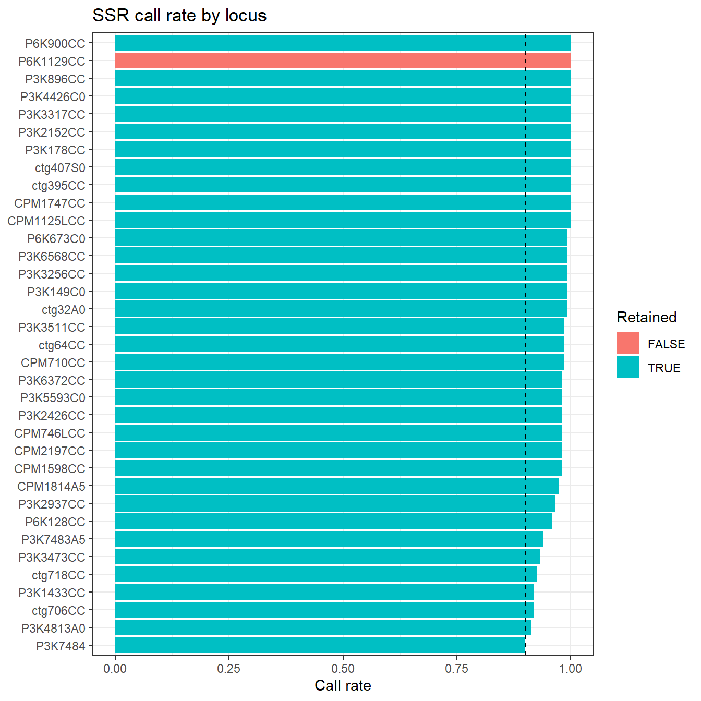
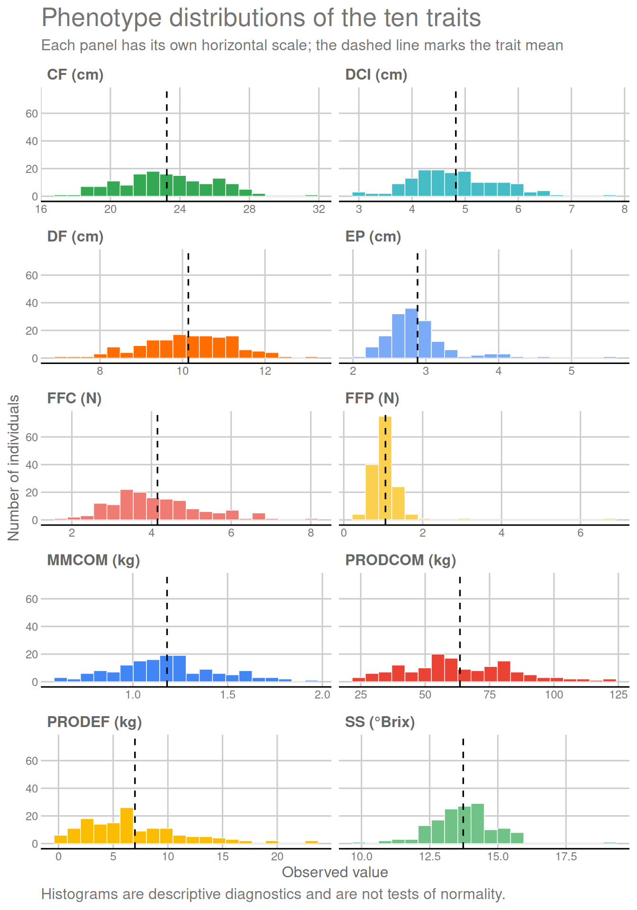

Last updated: 2026-08-20
Checks: 6 1
Knit directory:
Bayesian-ridge-regression-papaya/
This reproducible R Markdown analysis was created with workflowr (version 1.7.2). The Checks tab describes the reproducibility checks that were applied when the results were created. The Past versions tab lists the development history.
The R Markdown file has unstaged changes. To know which version of
the R Markdown file created these results, you’ll want to first commit
it to the Git repo. If you’re still working on the analysis, you can
ignore this warning. When you’re finished, you can run
wflow_publish to commit the R Markdown file and build the
HTML.
Great job! The global environment was empty. Objects defined in the global environment can affect the analysis in your R Markdown file in unknown ways. For reproduciblity it’s best to always run the code in an empty environment.
The command set.seed(20260717) was run prior to running
the code in the R Markdown file. Setting a seed ensures that any results
that rely on randomness, e.g. subsampling or permutations, are
reproducible.
Great job! Recording the operating system, R version, and package versions is critical for reproducibility.
Nice! There were no cached chunks for this analysis, so you can be confident that you successfully produced the results during this run.
Great job! Using relative paths to the files within your workflowr project makes it easier to run your code on other machines.
Great! You are using Git for version control. Tracking code development and connecting the code version to the results is critical for reproducibility.
The results in this page were generated with repository version 47fb05b. See the Past versions tab to see a history of the changes made to the R Markdown and HTML files.
Note that you need to be careful to ensure that all relevant files for
the analysis have been committed to Git prior to generating the results
(you can use wflow_publish or
wflow_git_commit). workflowr only checks the R Markdown
file, but you know if there are other scripts or data files that it
depends on. Below is the status of the Git repository when the results
were generated:
Ignored files:
Ignored: .Rproj.user/
Ignored: data/Bayesiana goiaba Eileen SReport.pdf
Ignored: output/
Ignored: renv/library/
Untracked files:
Untracked: apply_documentation_consolidation.R
Unstaged changes:
Modified: README.md
Modified: analysis/01_preprocessing_en.Rmd
Modified: analysis/01_preprocessing_pt.Rmd
Modified: analysis/02_matrices_en.Rmd
Modified: analysis/02_matrices_pt.Rmd
Modified: analysis/03_models_en.Rmd
Modified: analysis/03_models_pt.Rmd
Modified: analysis/about.Rmd
Modified: data/README.md
Note that any generated files, e.g. HTML, png, CSS, etc., are not included in this status report because it is ok for generated content to have uncommitted changes.
These are the previous versions of the repository in which changes were
made to the R Markdown (analysis/01_preprocessing_en.Rmd)
and HTML (docs/01_preprocessing_en.html) files. If you’ve
configured a remote Git repository (see ?wflow_git_remote),
click on the hyperlinks in the table below to view the files as they
were in that past version.
| File | Version | Author | Date | Message |
|---|---|---|---|---|
| html | 47fb05b | WevertonGomesCosta | 2026-08-19 | Finalize fixed-lambda Bayesian Lasso workflow |
| Rmd | 2facd24 | Weverton Gomes da Costa | 2026-08-11 | Remove block from preprocessing metadata |
| html | 0c7d9a4 | WevertonGomesCosta | 2026-08-10 | docs: publish streamlined data and matrix diagnostics |
| Rmd | 8dc160d | WevertonGomesCosta | 2026-08-10 | refactor: streamline data and matrix diagnostics |
| html | cbf8aca | WevertonGomesCosta | 2026-08-10 | docs: publish final results module |
| html | e5800c4 | WevertonGomesCosta | 2026-08-05 | docs: rebuild preprocessing and matrix tutorials |
| Rmd | e4542ed | WevertonGomesCosta | 2026-08-05 | feat: audit and retain extreme phenotype observations |
| html | 8221dff | WevertonGomesCosta | 2026-08-04 | docs: rebuild workflowr pages from committed sources |
| Rmd | 5bcf154 | WevertonGomesCosta | 2026-08-04 | feat: add matrix construction tutorial and standardize workflowr pages |
| html | 5bcf154 | WevertonGomesCosta | 2026-08-04 | feat: add matrix construction tutorial and standardize workflowr pages |
| Rmd | 21a2c9f | WevertonGomesCosta | 2026-08-04 | feat: add tutorial preprocessing workflow |
| html | 21a2c9f | WevertonGomesCosta | 2026-08-04 | feat: add tutorial preprocessing workflow |
| Rmd | c54495b | WevertonGomesCosta | 2026-07-23 | refactor: simplify workflowr tutorial structure |
| html | e1719e5 | GitHub | 2026-07-17 | ci: validate and publish workflowr site |
| Rmd | 7fab957 | Weverton Gomes da Costa | 2026-07-17 | feat: add reproducible papaya genomic selection workflow |
Genomic selection requires phenotype records and marker information to refer to the same individuals and to follow the same order.
This step reads the phenotype and SSR data, organizes individual and
locus labels, converts missing SSR codes to NA, aligns the
two data sources, and removes loci with insufficient call rate or no
genotypic variation.
The block column (BL) is no longer part of the
statistical model and is removed immediately after the phenotype data
are read. Family (FAM) is kept as the only categorical
covariate for later use as a fixed effect.
The five cross-validation folds are created after this preprocessing step.
The required packages are loaded first, followed by the paths of the two source workbooks and the output directory.
suppressPackageStartupMessages({
library(readxl)
library(dplyr)
library(tidyr)
library(ggplot2)
library(knitr)
library(here)
})GENOTYPE_FILE <- here("data", "papaya_ssr_genotypes.xlsx")
PHENOTYPE_FILE <- here("data", "papaya_phenotypes_2024_2025.xlsx")
OUTPUT_DIR <- here("output", "preprocessing")
CALL_RATE_MIN <- 0.90
PHENOTYPE_DISTANCE_THRESHOLD <- 4
dir.create(OUTPUT_DIR, recursive = TRUE, showWarnings = FALSE)The genotype workbook uses the Genes sheet for numerical
SSR codes and the Genealex sheet for individual and locus
labels. Phenotypes are read from the Médias_IND_artigo
sheet.
The BL column is discarded during reading because block
is no longer included in the models. Simple samples of both data sources
are then shown so readers can directly inspect the structure of the data
used in the analysis.
genes <- read_excel(
GENOTYPE_FILE,
sheet = "Genes",
col_names = FALSE,
na = c("", "NA")
)
genealex <- read_excel(
GENOTYPE_FILE,
sheet = "Genealex",
col_names = FALSE,
na = c("", "NA")
)
pheno_raw <- read_excel(
PHENOTYPE_FILE,
sheet = "Médias_IND_artigo",
na = c("", "NA")
) |>
select(-BL)
# Sample of the genotype data as read from the workbook.
genes[1:6, 1:6]# Sample of the phenotype data after removing BL.
head(pheno_raw)data.frame(
Source = c("Genes", "Genealex", "Médias_IND_artigo without BL"),
Rows = c(nrow(genes), nrow(genealex), nrow(pheno_raw)),
Columns = c(ncol(genes), ncol(genealex), ncol(pheno_raw))
) |>
kable(caption = "Dimensions of the data after reading")| Source | Rows | Columns |
|---|---|---|
| Genes | 150 | 36 |
| Genealex | 153 | 72 |
| Médias_IND_artigo without BL | 150 | 12 |
The first column of Genes identifies population groups.
The remaining columns contain the 35 SSR loci.
Individual identifiers are obtained from Genealex and
kept as character values so that labels such as 144B are
preserved. Missing SSR calls coded as -9 are converted to
NA.
n_individuals <- nrow(genes)
n_loci <- ncol(genes) - 1
individual_rows <- 4:(3 + n_individuals)
locus_columns <- seq(3, 2 + 2 * n_loci, by = 2)
ids <- trimws(
as.character(genealex[[2]][individual_rows])
)
locus_names <- trimws(
as.character(
unlist(genealex[3, locus_columns], use.names = FALSE)
)
)
ssr_raw <- as.matrix(
genes[, -1, drop = FALSE]
)
storage.mode(ssr_raw) <- "numeric"
ssr_raw[ssr_raw == -9] <- NA_real_
rownames(ssr_raw) <- ids
colnames(ssr_raw) <- locus_namesTen traits are used in the analysis. Family (FAM) is
retained as a categorical variable and will be the only fixed effect in
addition to the model intercept.
The phenotype table is reordered according to the SSR identifiers. This guarantees that each phenotype row refers to the same individual as the corresponding marker row.
TRAITS <- c(
"MMCOM", "PRODCOM", "PRODEF", "CF", "DF",
"DCI", "EP", "FFC", "FFP", "SS"
)
required_columns <- c("IND", "FAM", TRAITS)
missing_columns <- setdiff(
required_columns,
names(pheno_raw)
)
if (length(missing_columns) > 0L) {
stop(
"Required phenotype columns are missing: ",
paste(missing_columns, collapse = ", ")
)
}
pheno_raw$IND <- trimws(as.character(pheno_raw$IND))
missing_in_pheno <- setdiff(ids, pheno_raw$IND)
missing_in_geno <- setdiff(pheno_raw$IND, ids)
alignment <- data.frame(
Check = c(
"Genotyped individuals",
"Phenotyped individuals",
"Missing in phenotype data",
"Missing in genotype data"
),
Value = c(
length(ids),
nrow(pheno_raw),
length(missing_in_pheno),
length(missing_in_geno)
)
)
kable(
alignment,
caption = "Alignment between genotype and phenotype data"
)| Check | Value |
|---|---|
| Genotyped individuals | 150 |
| Phenotyped individuals | 150 |
| Missing in phenotype data | 0 |
| Missing in genotype data | 0 |
identifier_summary <- data.frame(
Check = c(
"Missing genotype identifiers",
"Duplicated genotype identifiers",
"Missing locus labels",
"Duplicated locus labels",
"Missing phenotype identifiers",
"Duplicated phenotype identifiers",
"Missing required phenotype columns"
),
Value = c(
sum(is.na(ids) | ids == ""),
sum(duplicated(ids)),
sum(is.na(locus_names) | locus_names == ""),
sum(duplicated(locus_names)),
sum(is.na(pheno_raw$IND) | pheno_raw$IND == ""),
sum(duplicated(pheno_raw$IND)),
length(missing_columns)
)
)
identifier_integrity_checks <- c(
genotype_ids_complete =
!any(is.na(ids) | ids == ""),
genotype_ids_unique =
!anyDuplicated(ids),
locus_names_complete =
!any(is.na(locus_names) | locus_names == ""),
locus_names_unique =
!anyDuplicated(locus_names),
phenotype_ids_complete =
!any(is.na(pheno_raw$IND) | pheno_raw$IND == ""),
phenotype_ids_unique =
!anyDuplicated(pheno_raw$IND),
genotype_phenotype_id_sets_match =
length(missing_in_pheno) == 0L &&
length(missing_in_geno) == 0L
)
if (!all(identifier_integrity_checks)) {
stop(
"Identifier/alignment contract failed: ",
paste(
names(identifier_integrity_checks)[
!identifier_integrity_checks
],
collapse = ", "
)
)
}
kable(
identifier_summary,
caption = "Identifier and column summary"
)| Check | Value |
|---|---|
| Missing genotype identifiers | 0 |
| Duplicated genotype identifiers | 0 |
| Missing locus labels | 0 |
| Duplicated locus labels | 0 |
| Missing phenotype identifiers | 0 |
| Duplicated phenotype identifiers | 0 |
| Missing required phenotype columns | 0 |
pheno <- pheno_raw[
match(ids, pheno_raw$IND),
required_columns
]
for (trait in TRAITS) {
pheno[[trait]] <- as.numeric(
as.character(
pheno[[trait]]
)
)
}
metadata <- data.frame(
IND = pheno$IND,
FAM = factor(pheno$FAM),
row.names = pheno$IND
)
phenotypes <- as.matrix(pheno[, TRAITS])
storage.mode(phenotypes) <- "numeric"
rownames(phenotypes) <- pheno$INDFor each locus, we calculate the call rate and the number of observed genotype classes. A locus is retained when its call rate is at least 0.90 and at least two genotype classes are present.
genotype_classes <- integer(
ncol(ssr_raw)
)
for (j in seq_len(ncol(ssr_raw))) {
genotype_classes[j] <- length(
unique(
na.omit(
ssr_raw[, j]
)
)
)
}
locus_audit <- data.frame(
Locus = colnames(ssr_raw),
N_called = colSums(!is.na(ssr_raw)),
Call_rate = colMeans(!is.na(ssr_raw)),
N_genotype_classes = genotype_classes
)
rownames(locus_audit) <- NULL
locus_audit$Keep_locus <-
locus_audit$Call_rate >= CALL_RATE_MIN &
locus_audit$N_genotype_classes >= 2
ssr <- ssr_raw[
,
locus_audit$Keep_locus,
drop = FALSE
]
kable(
locus_audit,
digits = 3,
caption = "Quality control of the SSR loci"
)| Locus | N_called | Call_rate | N_genotype_classes | Keep_locus |
|---|---|---|---|---|
| P3K4813A0 | 137 | 0.913 | 3 | TRUE |
| CPM1598CC | 147 | 0.980 | 3 | TRUE |
| CPM1814A5 | 146 | 0.973 | 3 | TRUE |
| P3K1433CC | 138 | 0.920 | 3 | TRUE |
| P3K5593C0 | 147 | 0.980 | 3 | TRUE |
| CPM746LCC | 147 | 0.980 | 3 | TRUE |
| P6K128CC | 144 | 0.960 | 3 | TRUE |
| P3K3256CC | 149 | 0.993 | 5 | TRUE |
| P3K3511CC | 148 | 0.987 | 3 | TRUE |
| ctg64CC | 148 | 0.987 | 2 | TRUE |
| P6K900CC | 150 | 1.000 | 3 | TRUE |
| P3K7484 | 135 | 0.900 | 2 | TRUE |
| P3K149C0 | 149 | 0.993 | 5 | TRUE |
| ctg718CC | 139 | 0.927 | 3 | TRUE |
| P6K1129CC | 150 | 1.000 | 1 | FALSE |
| P3K6372CC | 147 | 0.980 | 3 | TRUE |
| CPM2197CC | 147 | 0.980 | 3 | TRUE |
| ctg395CC | 150 | 1.000 | 2 | TRUE |
| P3K2937CC | 145 | 0.967 | 3 | TRUE |
| CPM1125LCC | 150 | 1.000 | 3 | TRUE |
| P3K3317CC | 150 | 1.000 | 3 | TRUE |
| P3K2152CC | 150 | 1.000 | 3 | TRUE |
| P6K673C0 | 149 | 0.993 | 3 | TRUE |
| CPM710CC | 148 | 0.987 | 3 | TRUE |
| CPM1747CC | 150 | 1.000 | 3 | TRUE |
| P3K896CC | 150 | 1.000 | 3 | TRUE |
| P3K2426CC | 147 | 0.980 | 2 | TRUE |
| P3K3473CC | 140 | 0.933 | 2 | TRUE |
| ctg706CC | 138 | 0.920 | 3 | TRUE |
| P3K7483A5 | 141 | 0.940 | 3 | TRUE |
| ctg407S0 | 150 | 1.000 | 3 | TRUE |
| P3K4426C0 | 150 | 1.000 | 4 | TRUE |
| P3K178CC | 150 | 1.000 | 3 | TRUE |
| P3K6568CC | 149 | 0.993 | 4 | TRUE |
| ctg32A0 | 149 | 0.993 | 3 | TRUE |
The figure shows the call rate of each locus and the minimum accepted value.
ggplot(
locus_audit,
aes(
x = reorder(Locus, Call_rate),
y = Call_rate,
fill = Keep_locus
)
) +
geom_col() +
geom_hline(
yintercept = CALL_RATE_MIN,
linetype = 2
) +
coord_flip() +
labs(
x = NULL,
y = "Call rate",
fill = "Retained",
title = "SSR call rate by locus"
) +
theme_bw()
| Version | Author | Date |
|---|---|---|
| 21a2c9f | WevertonGomesCosta | 2026-08-04 |
The individual audit summarizes the amount of available SSR information for each plant.
individual_audit <- data.frame(
IND = rownames(ssr_raw),
N_called = rowSums(!is.na(ssr_raw)),
Call_rate = rowMeans(!is.na(ssr_raw))
)
rownames(individual_audit) <- NULL
individual_call_rate_summary <- data.frame(
Measure = c("Minimum", "Mean", "Median", "Maximum"),
Call_rate = c(
min(individual_audit$Call_rate),
mean(individual_audit$Call_rate),
median(individual_audit$Call_rate),
max(individual_audit$Call_rate)
)
)
kable(
individual_call_rate_summary,
digits = 3,
caption = "Distribution summary of individual SSR call rates"
)| Measure | Call_rate |
|---|---|
| Minimum | 0.914 |
| Mean | 0.976 |
| Median | 0.971 |
| Maximum | 1.000 |
The phenotype summary provides a simple check of the scale and variation of the ten traits.
phenotype_sd <- numeric(
ncol(phenotypes)
)
phenotype_minimum <- numeric(
ncol(phenotypes)
)
phenotype_maximum <- numeric(
ncol(phenotypes)
)
for (j in seq_len(ncol(phenotypes))) {
phenotype_sd[j] <- sd(
phenotypes[, j]
)
phenotype_minimum[j] <- min(
phenotypes[, j]
)
phenotype_maximum[j] <- max(
phenotypes[, j]
)
}
phenotype_summary <- data.frame(
Trait = colnames(phenotypes),
N = colSums(!is.na(phenotypes)),
Mean = colMeans(phenotypes),
SD = phenotype_sd,
Minimum = phenotype_minimum,
Maximum = phenotype_maximum
)
rownames(phenotype_summary) <- NULL
kable(
phenotype_summary,
digits = 3,
caption = "Summary of the phenotype traits"
)| Trait | N | Mean | SD | Minimum | Maximum |
|---|---|---|---|---|---|
| MMCOM | 150 | 1.181 | 0.266 | 0.620 | 1.943 |
| PRODCOM | 150 | 63.510 | 21.518 | 24.225 | 121.609 |
| PRODEF | 150 | 6.990 | 4.637 | 0.200 | 23.142 |
| CF | 150 | 23.247 | 2.665 | 17.140 | 31.580 |
| DF | 150 | 10.143 | 1.108 | 7.049 | 13.129 |
| DCI | 150 | 4.825 | 0.815 | 2.998 | 7.719 |
| EP | 150 | 2.887 | 0.462 | 2.080 | 5.523 |
| FFC | 150 | 4.150 | 1.147 | 1.720 | 8.020 |
| FFP | 150 | 1.057 | 0.561 | 0.380 | 6.740 |
| SS | 150 | 13.731 | 1.171 | 9.900 | 19.100 |
Standardized values are used only as a descriptive diagnostic to identify observations located far from the mean of their respective trait. An observation is highlighted when its absolute standardized value is at least 4.
The highlighted values are retained exactly as recorded in the source workbook. They are not automatically corrected, winsorized, transformed, or removed. Their potential influence must be considered when interpreting model fit, predictive performance, residual diagnostics, and genomic rankings.
phenotype_means <- colMeans(
phenotypes
)
phenotype_standard_deviations <- numeric(
ncol(phenotypes)
)
for (j in seq_len(ncol(phenotypes))) {
phenotype_standard_deviations[j] <- sd(
phenotypes[, j]
)
}
phenotype_standardized <- scale(
phenotypes,
center = phenotype_means,
scale = phenotype_standard_deviations
)
extreme_positions <- which(
abs(phenotype_standardized) >=
PHENOTYPE_DISTANCE_THRESHOLD,
arr.ind = TRUE
)
phenotype_extremes <- data.frame(
IND = rownames(phenotypes)[
extreme_positions[, "row"]
],
Trait = colnames(phenotypes)[
extreme_positions[, "col"]
],
Value = phenotypes[
extreme_positions
],
Trait_mean = phenotype_means[
extreme_positions[, "col"]
],
Trait_SD = phenotype_standard_deviations[
extreme_positions[, "col"]
],
Standardized_value = phenotype_standardized[
extreme_positions
],
Absolute_standardized_distance = abs(
phenotype_standardized[
extreme_positions
]
)
)
phenotype_extremes <- phenotype_extremes[
order(
-phenotype_extremes$
Absolute_standardized_distance
),
]
rownames(phenotype_extremes) <- NULL
kable(
phenotype_extremes,
digits = 3,
caption = paste0(
"Phenotypic observations at least ",
PHENOTYPE_DISTANCE_THRESHOLD,
" standard deviations from the trait mean"
)
)| IND | Trait | Value | Trait_mean | Trait_SD | Standardized_value | Absolute_standardized_distance |
|---|---|---|---|---|---|---|
| 97 | FFP | 6.740 | 1.057 | 0.561 | 10.133 | 10.133 |
| 89 | EP | 5.523 | 2.887 | 0.462 | 5.707 | 5.707 |
| 20 | SS | 19.100 | 13.731 | 1.171 | 4.586 | 4.586 |
The trait dictionary records the biological meaning and measurement unit of each phenotype code.
trait_dictionary <- data.frame(
Trait = TRAITS,
Description_en = c(
"Mean mass of commercial fruit",
"Production of commercial fruit",
"Production of defective fruit",
"Fruit length",
"Fruit diameter",
"Internal-cavity diameter",
"Mean pulp thickness",
"External fruit firmness",
"Internal pulp firmness",
"Soluble solids"
),
Description_pt = c(
"Massa média de frutos comerciais",
"Produção de frutos comerciais",
"Produção de frutos defeituosos",
"Comprimento do fruto",
"Diâmetro do fruto",
"Diâmetro da cavidade interna",
"Espessura média da polpa",
"Firmeza externa do fruto",
"Firmeza interna da polpa",
"Sólidos solúveis"
),
Unit = c(
"kg", "kg", "kg", "cm", "cm",
"cm", "cm", "N", "N", "°Brix"
)
)
rownames(trait_dictionary) <- NULL
kable(
trait_dictionary[, c("Trait", "Description_en", "Unit")],
caption = "Dictionary of the phenotype traits"
)| Trait | Description_en | Unit |
|---|---|---|
| MMCOM | Mean mass of commercial fruit | kg |
| PRODCOM | Production of commercial fruit | kg |
| PRODEF | Production of defective fruit | kg |
| CF | Fruit length | cm |
| DF | Fruit diameter | cm |
| DCI | Internal-cavity diameter | cm |
| EP | Mean pulp thickness | cm |
| FFC | External fruit firmness | N |
| FFP | Internal pulp firmness | N |
| SS | Soluble solids | °Brix |
phenotype_long <- data.frame(
IND = rownames(phenotypes),
phenotypes,
check.names = FALSE
) |>
pivot_longer(
cols = -IND,
names_to = "Trait",
values_to = "Value"
)
ggplot(phenotype_long, aes(x = Value)) +
geom_histogram(bins = 20) +
facet_wrap(~ Trait, scales = "free", ncol = 2) +
labs(
x = "Observed value",
y = "Number of individuals",
title = "Phenotypic distributions"
) +
theme_bw()
The aligned phenotype matrix, SSR matrices, metadata, summaries, and trait dictionary are stored in one object for the following stages. Metadata contain only the individual identifier and family used as the fixed effect.
EXPECTED_N_INDIVIDUALS <- 150L
EXPECTED_N_ORIGINAL_LOCI <- 35L
EXPECTED_N_FAMILIES <- 10L
EXPECTED_FAMILY_SIZE <- 15L
expected_locus_keep <-
locus_audit$Call_rate >= CALL_RATE_MIN &
locus_audit$N_genotype_classes >= 2
preprocessing_integrity_checks <- c(
individual_count =
length(ids) == EXPECTED_N_INDIVIDUALS,
genotype_ids_unique =
!anyDuplicated(ids),
ssr_raw_dimensions =
identical(
dim(ssr_raw),
c(EXPECTED_N_INDIVIDUALS, EXPECTED_N_ORIGINAL_LOCI)
),
ssr_raw_ids_aligned =
identical(rownames(ssr_raw), ids),
ssr_raw_observed_values_finite =
all(is.finite(ssr_raw[!is.na(ssr_raw)])),
locus_audit_count =
nrow(locus_audit) == EXPECTED_N_ORIGINAL_LOCI,
locus_filter_rule_exact =
identical(locus_audit$Keep_locus, expected_locus_keep),
retained_loci_match_ssr =
identical(
colnames(ssr),
locus_audit$Locus[locus_audit$Keep_locus]
),
retained_ssr_ids_aligned =
identical(rownames(ssr), ids),
phenotype_dimensions =
identical(
dim(phenotypes),
c(EXPECTED_N_INDIVIDUALS, length(TRAITS))
),
phenotype_traits_exact =
identical(colnames(phenotypes), TRAITS),
phenotype_ids_aligned =
identical(rownames(phenotypes), ids),
phenotype_values_finite =
all(is.finite(phenotypes)),
metadata_ids_aligned =
identical(as.character(metadata$IND), ids),
families_complete =
!anyNA(metadata$FAM),
family_levels_exact =
setequal(
unique(as.character(metadata$FAM)),
as.character(seq_len(EXPECTED_N_FAMILIES))
),
family_sizes_exact =
length(table(metadata$FAM)) == EXPECTED_N_FAMILIES &&
all(table(metadata$FAM) == EXPECTED_FAMILY_SIZE),
trait_dictionary_exact =
identical(as.character(trait_dictionary$Trait), TRAITS)
)
if (!all(preprocessing_integrity_checks)) {
stop(
"Final preprocessing integrity gate failed: ",
paste(
names(preprocessing_integrity_checks)[
!preprocessing_integrity_checks
],
collapse = ", "
)
)
}
preprocessing_object <- list(
ids = ids,
metadata = metadata,
phenotypes = phenotypes,
ssr_raw = ssr_raw,
ssr = ssr,
locus_audit = locus_audit,
individual_audit = individual_audit,
phenotype_summary = phenotype_summary,
phenotype_extremes = phenotype_extremes,
trait_dictionary = trait_dictionary,
settings = list(
call_rate_min = CALL_RATE_MIN,
phenotype_distance_threshold =
PHENOTYPE_DISTANCE_THRESHOLD,
fixed_effects = "FAM"
)
)
saveRDS(
preprocessing_object,
file.path(OUTPUT_DIR, "preprocessing_object.rds")
)
write.csv(
alignment,
file.path(OUTPUT_DIR, "alignment_summary.csv"),
row.names = FALSE
)
write.csv(
locus_audit,
file.path(OUTPUT_DIR, "locus_audit.csv"),
row.names = FALSE
)
write.csv(
individual_audit,
file.path(OUTPUT_DIR, "individual_audit.csv"),
row.names = FALSE
)
write.csv(
phenotype_summary,
file.path(OUTPUT_DIR, "phenotype_summary.csv"),
row.names = FALSE
)
write.csv(
phenotype_extremes,
file.path(
OUTPUT_DIR,
"phenotype_extreme_values.csv"
),
row.names = FALSE
)
write.csv(
trait_dictionary,
file.path(OUTPUT_DIR, "trait_dictionary.csv"),
row.names = FALSE
)data.frame(
Item = c(
"Individuals",
"Phenotype traits",
"Raw SSR loci",
"Retained SSR loci",
"Families (fixed effect)",
"Missing SSR calls",
"Flagged phenotype observations"
),
Value = c(
length(ids),
ncol(phenotypes),
ncol(ssr_raw),
ncol(ssr),
nlevels(metadata$FAM),
sum(is.na(ssr_raw)),
nrow(phenotype_extremes)
)
) |>
kable(caption = "Final preprocessing inventory")| Item | Value |
|---|---|
| Individuals | 150 |
| Phenotype traits | 10 |
| Raw SSR loci | 35 |
| Retained SSR loci | 34 |
| Families (fixed effect) | 10 |
| Missing SSR calls | 126 |
| Flagged phenotype observations | 3 |
The next module converts retained SSR loci into allele-dosage columns, builds the marker and genomic relationship matrices, creates the fixed-effect matrix containing family only, and defines the five cross-validation folds.
sessionInfo()R version 4.5.1 (2025-06-13 ucrt)
Platform: x86_64-w64-mingw32/x64
Running under: Windows 11 x64 (build 26200)
Matrix products: default
LAPACK version 3.12.1
locale:
[1] LC_COLLATE=Portuguese_Brazil.utf8 LC_CTYPE=Portuguese_Brazil.utf8
[3] LC_MONETARY=Portuguese_Brazil.utf8 LC_NUMERIC=C
[5] LC_TIME=Portuguese_Brazil.utf8
time zone: America/Sao_Paulo
tzcode source: internal
attached base packages:
[1] stats graphics grDevices datasets utils methods base
other attached packages:
[1] here_1.0.2 knitr_1.51 ggplot2_4.0.3 tidyr_1.3.2
[5] dplyr_1.2.1 readxl_1.5.0 workflowr_1.7.2
loaded via a namespace (and not attached):
[1] sass_0.4.10 generics_0.1.4 renv_1.2.3 stringi_1.8.7
[5] digest_0.6.39 magrittr_2.0.5 evaluate_1.0.5 grid_4.5.1
[9] RColorBrewer_1.1-3 fastmap_1.2.0 cellranger_1.1.0 rprojroot_2.1.1
[13] jsonlite_2.0.0 processx_3.9.0 whisker_0.4.1 promises_1.5.0
[17] httr_1.4.8 purrr_1.2.2 scales_1.4.0 jquerylib_0.1.4
[21] cli_3.6.6 rlang_1.3.0 withr_3.0.3 cachem_1.1.0
[25] yaml_2.3.12 otel_0.2.0 tools_4.5.1 httpuv_1.6.17
[29] vctrs_0.7.3 R6_2.6.1 lifecycle_1.0.5 git2r_0.36.2
[33] stringr_1.6.0 fs_2.1.0 pkgconfig_2.0.3 callr_3.8.0
[37] pillar_1.11.1 bslib_0.11.0 later_1.4.8 gtable_0.3.6
[41] glue_1.8.1 Rcpp_1.1.2 xfun_0.60 tibble_3.3.1
[45] tidyselect_1.2.1 rstudioapi_0.19.0 farver_2.1.2 htmltools_0.5.9
[49] rmarkdown_2.31 labeling_0.4.3 compiler_4.5.1 getPass_0.2-4
[53] S7_0.2.2 Weverton Gomes da Costa, Postdoctoral Researcher, Department of Statistics - Federal University of Viçosa, weverton.costa@ufv.br↩︎